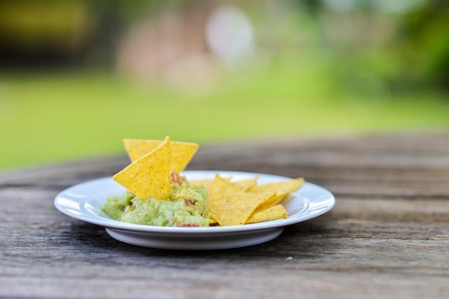

Guacamole
Description
A spicy dip serving 1-4 people. Serve with tortilla or corn chips or use as a nacho topping.
Ingredients
- 3 Avacados
- 1 Onion
- 1 Habanero Pepper
- 1 Lemon
Steps
- Finely cut the onion and the habanero. Blend the onions with a blender if you have one. You don't want onion chunks if you can avoid them.
- Smash the avacado. Add the onion and habanero mix to the avacado.
- Squeeze the juice of the lemon into the avacado mix to prevent browning.
- Mix thoroughly.
- Serve or refrigerate or use as a nacho topping.